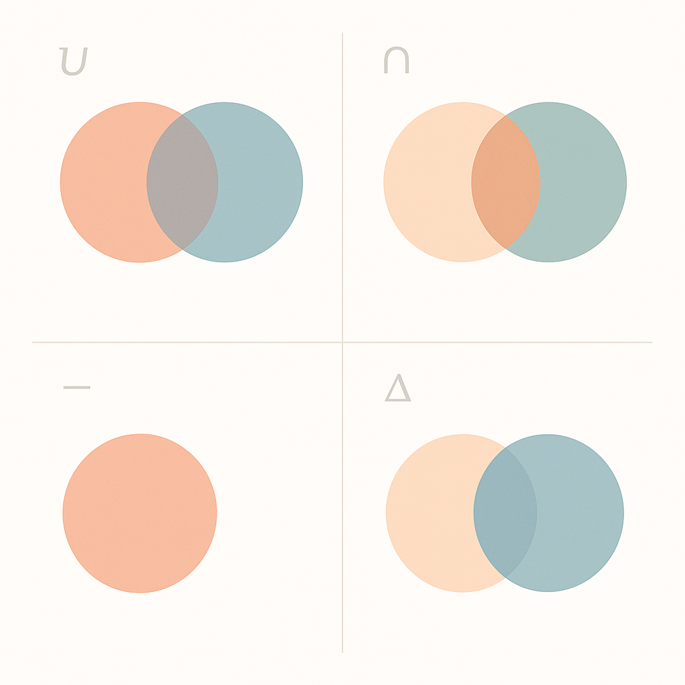

 Weil ich es heute wiederholt nachschlagen musste, hier noch eine Erinnerung an mich selbst, wie einfach es ist auf der Shell set Operationen durchzuführen.
In unserem Beispiel: ~10k Datenbank-IDs hier, ~15k Datenbank-IDs da, und die Frage welche davon nur in der einen Liste enthalten sind. Das ist dann einfach zu beantworten, wenn man die auf eine ID pro Zeile ausgibt, und dann einfach mit set_difference bearbeitet.
set_union () { sort $1 $2 | uniq } set_intersection () { sort $1 $2 | uniq --repeated } set_difference () { sort $1 $2 $2 | uniq --unique } set_symmetric_difference() { sort $1 $2 | uniq --unique }